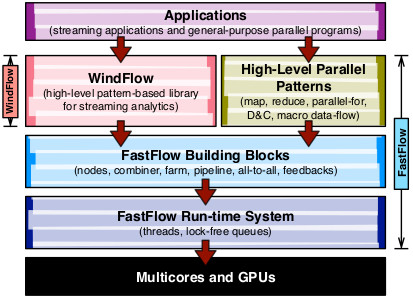

A C++17 Data Stream Processing Parallel Library for Multicores and GPUs
A C++17 Data Stream Processing Parallel Library for Multicores and GPUs
WindFlow is a library for parallel data stream processing on shared-memory systems and NVIDIA GPU devices. Data stream processing is a popular computing paradigm enabled by several existing open-source frameworks (e.g., Apache Storm, Apache Flink and Spark Streaming). All the existing solutions target distributed systems (e.g., clusters of servers) and are based on the Java Virtual Machine (JVM) for easing the development on distributed architectures. However, as recognized by recent publications [1,2], they are not effective in exploiting at best the potential of scale-up configurations, that is single nodes equipped with several multi-core CPUs and co-processors (e.g., GPUs and FPGAs).
The library proposed in this web page tries to fill this gap by providing an easy-to-use tool with the following distinguishable features:
The library is built on top of FastFlow (v3.0) [3], a parallel programming framework developed since 2010 by the Parallel Programming Models (PPMs) group at the Department of Computer Science, University of Pisa, Italy. The framework allows the programmer to build concurrency graphs of execution entities (nodes, each executed by a dedicated thread) exchanging data references through efficient lock-free single-producer single-consumer queues. Further details about FastFlow can be found in the web page of the project. The figure below summarizes the software layers of the FastFlow ecosystem, with WindFlow built on top of the FastFlow's basic building blocks aside to the high-level parallel patterns provided by the framework (e.g., parallel-for, map-reduce, stencil-reduce, divide-and-conquer and others).

You can download a short presentation of the library here. The slides were used for the Invited Talk given at ICBDR 2019, Paris.

Below, a youtube link to a video of my "Guest Lecture" as Invited Professor at PUCRS, Porto Alegre, Brazil (September, 2019). In this video, you can find a description of WindFlow from the research perspective.